12 Eylül 2026 · Masaüstü 1440×900 / Mobil 390×900. Tam sayfa görüntüleri. Hareket azaltma açık; alt sayfalarda sunucuda üretilen görünüm kaydedildi. Animasyonlar ve etkileşimler canlı önizlemede test edilir.
Canlı önizleme · İlk tasarımın önce/sonra görüntüleri · Önceki Attio revizyonu
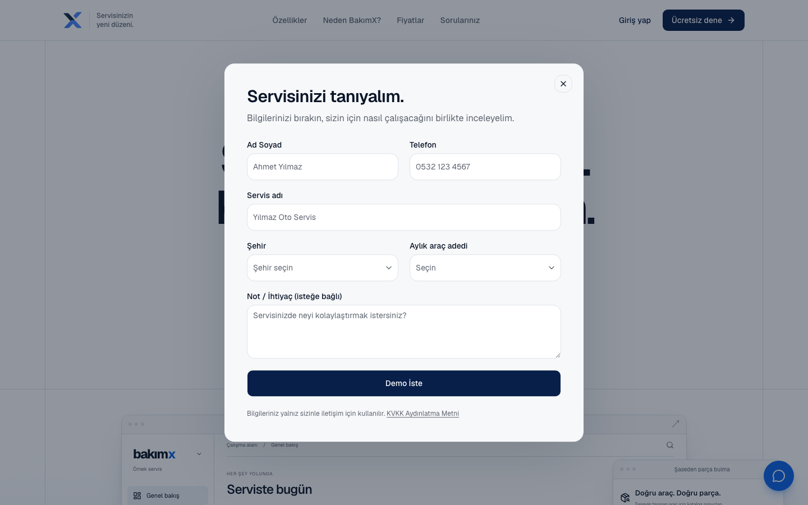
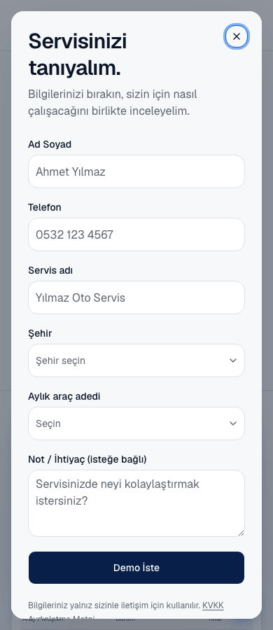
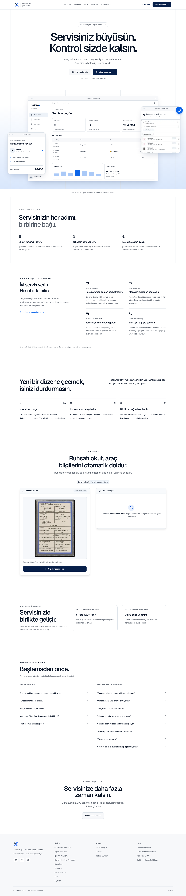
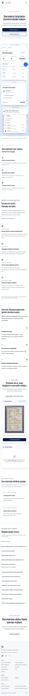
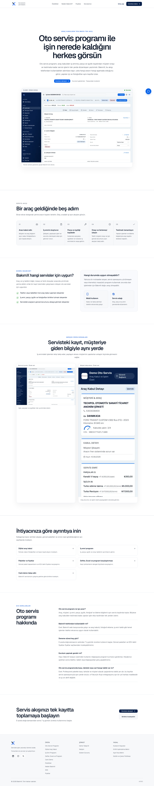
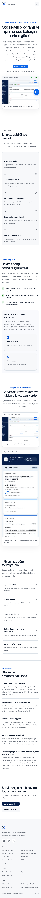
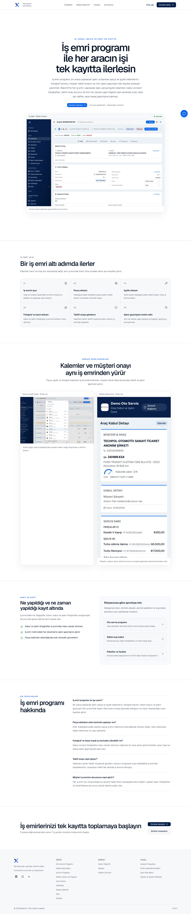
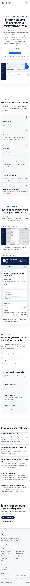
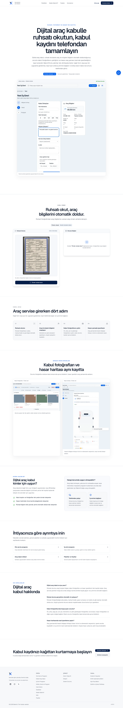
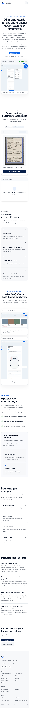
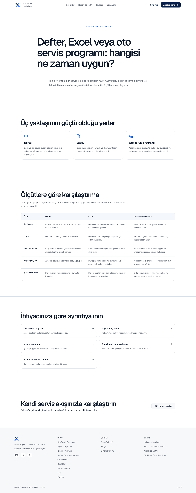
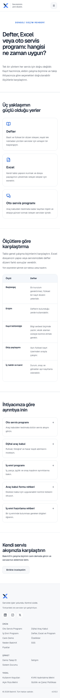
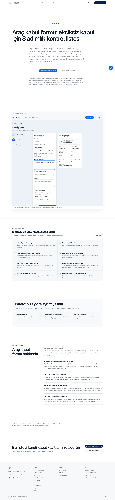
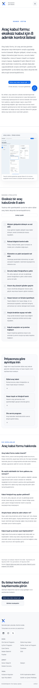
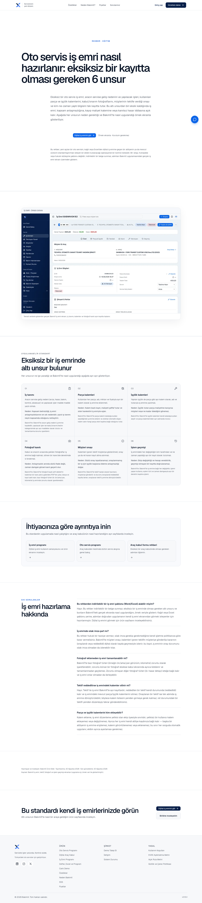
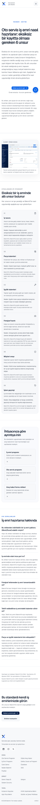
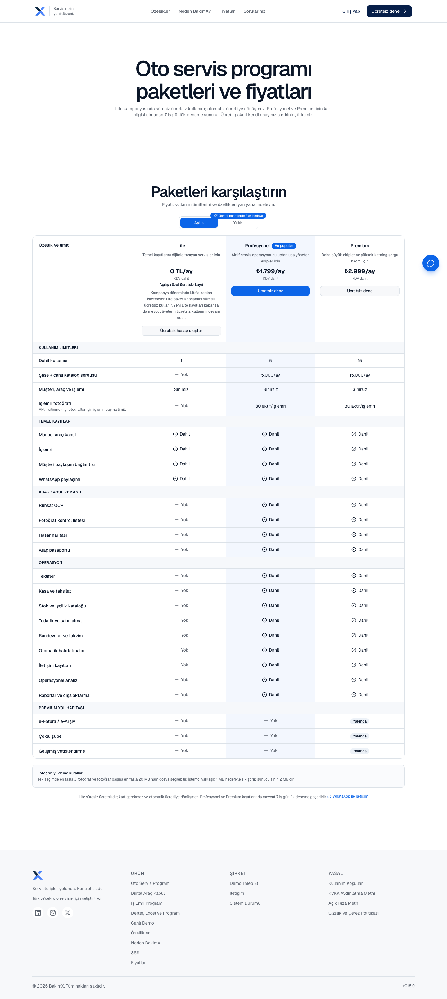
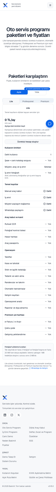
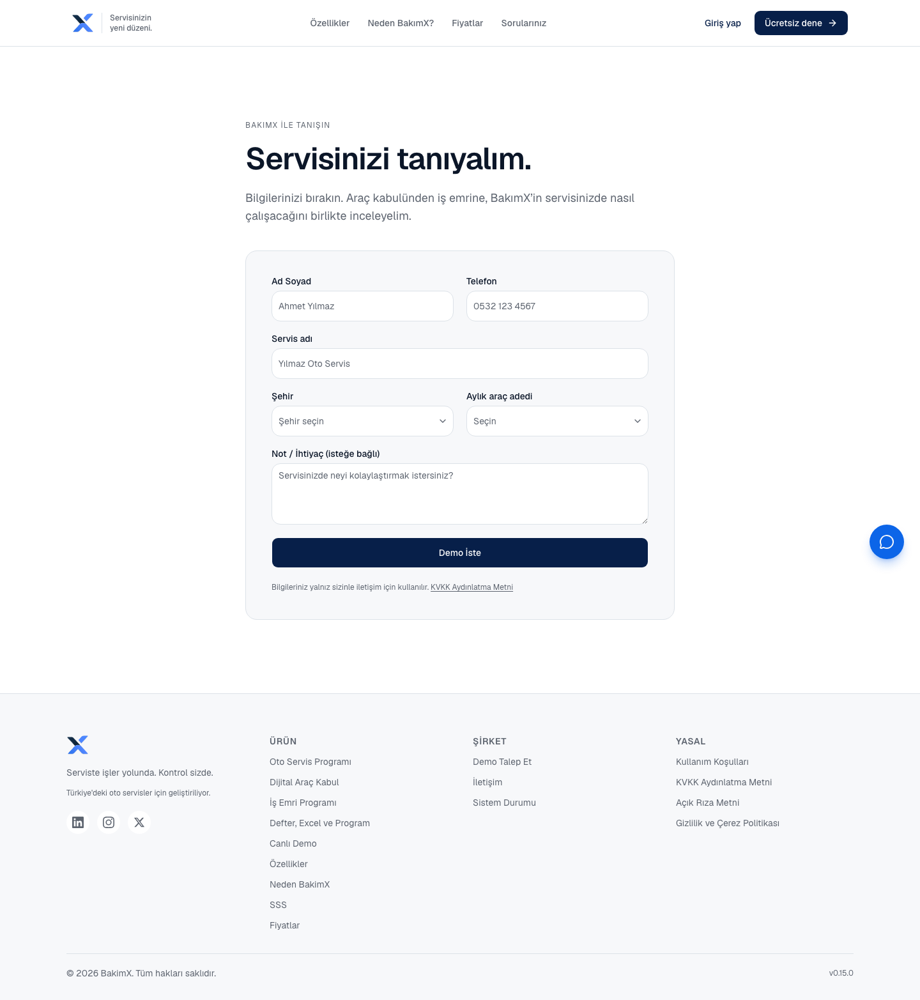
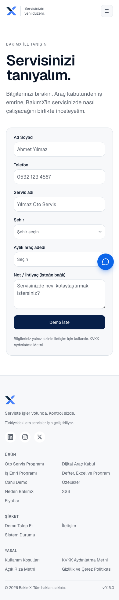
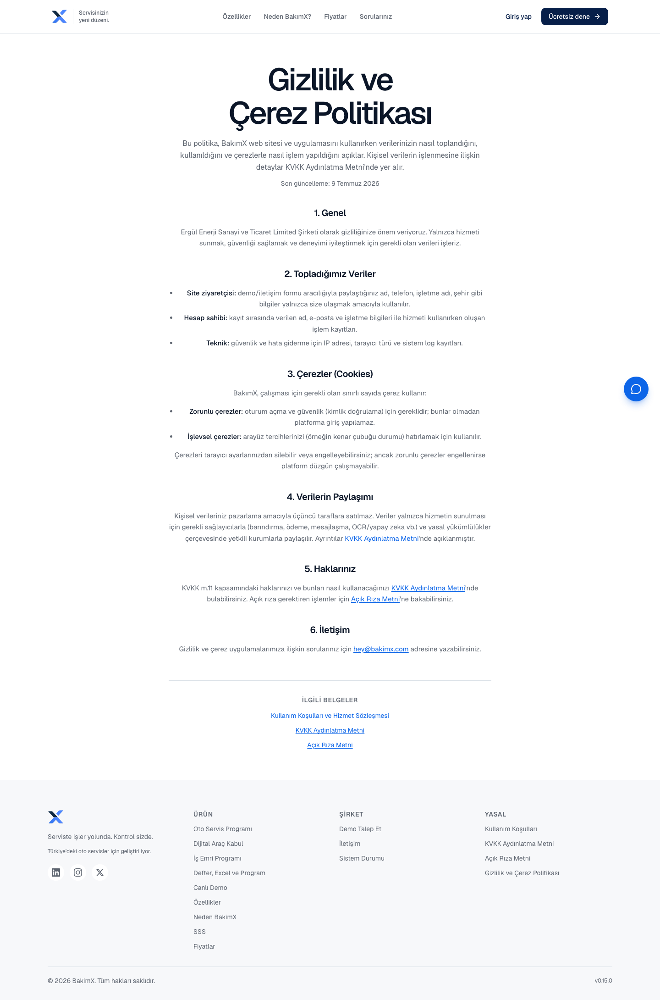
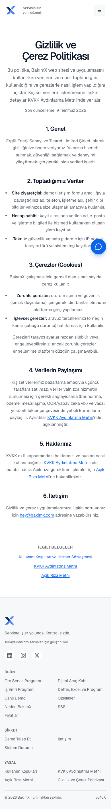
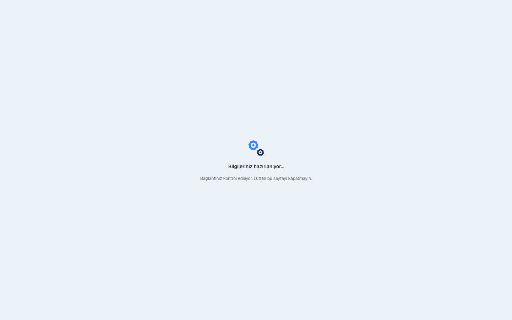